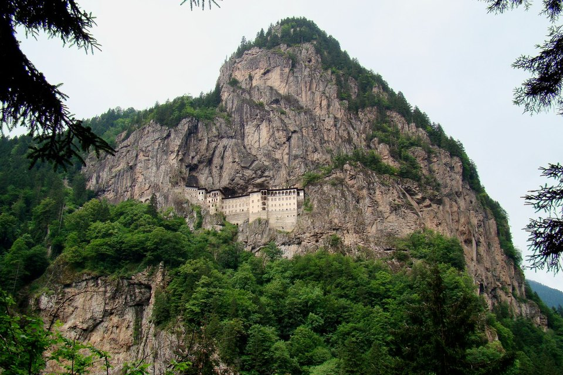

Turkey · Maçka
Sümela audio guide
5 stops · 7 min · offline · plays as you arrive
The guide price is €1.99. This button is a placeholder. It does not open checkout and does not take payment. Email hello@getearwise.com.
A 5-stop offline audio guide to Sümela in Maçka, recorded in 10 languages and designed to play as you arrive. It covers the cliff-clinging Greek Orthodox monastery, aqueduct, and rock-church frescoes. Download once; you will not need a signal on the ground.
Stops
- 1
A monastery in the cliff
On the forest path below the monastery, where its façade first appears high up on the rock face. This is stop 1 on the route.
- 2
The icon's story
At the monastery entrance, near the remains of the old aqueduct arches. This is stop 2 on the route.
- 3
The rock church
Here the guide turns to The rock church.
- 4
Sultans and war
A short story at this point covers Sultans and war.
- 5
The holy spring
Near the holy spring (ayazma) inside the monastery. This is stop 5 on the route.
On the map
All 5 stop pins for this guide are marked. Open map